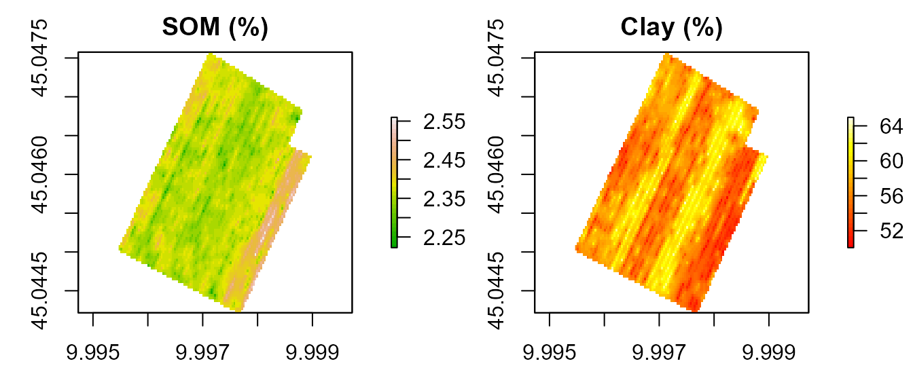
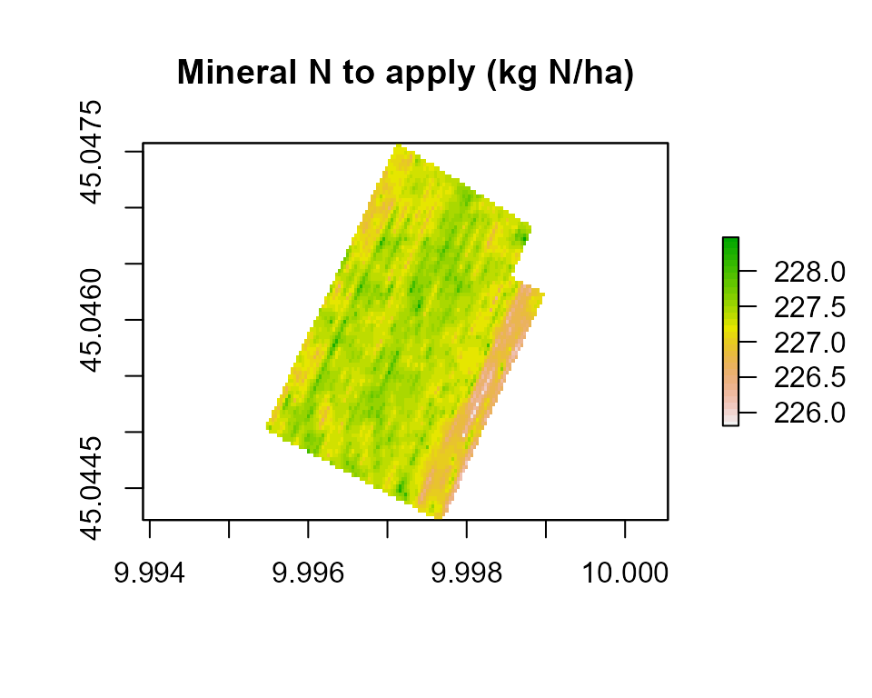
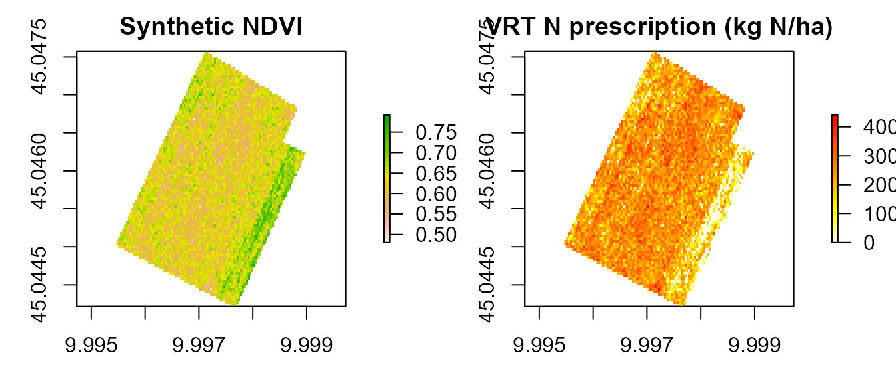

vignettes/spatial-balance.Rmd
spatial-balance.RmdThis vignette demonstrates the full NFert spatial workflow:
spatial_N_balance()
variable_rate_N() (Holland & Schepers method)The workflow implements the pipeline described in Section 2.2 of the NFert SoftwareX article: the field-scale balance provides the regulatory-compliant N target, and the VRT functions redistribute it in space under a mass-balance constraint.
NFert ships with six GeoTIFF rasters for a 12-ha arable field near Cremona (Northern Italy), at ~3.5 m resolution: total nitrogen (TN, %), soil organic matter (SOM, %), clay, sand and silt content (%), and the C/N ratio.
library(NFert)
library(raster)
#> Loading required package: sp
ext <- system.file("extdata", package = "NFert")
# Read individually: the bundled GeoTIFFs may have sub-pixel extent
# mismatches from separate acquisitions, so we resample to a common
# grid (the TN raster) before stacking.
r_tn <- raster::raster(file.path(ext, "Cremonesi_TN.tif"))
r_som <- raster::raster(file.path(ext, "Cremonesi_SOM.tif"))
r_clay <- raster::raster(file.path(ext, "Cremonesi_Clay.tif"))
r_sand <- raster::raster(file.path(ext, "Cremonesi_Sand.tif"))
r_cn <- raster::raster(file.path(ext, "Cremonesi_CNratio.tif"))
align <- function(r, ref) {
if (!raster::compareRaster(r, ref, stopiffalse = FALSE)) {
r <- raster::resample(r, ref, method = "bilinear")
}
r
}
soil <- raster::stack(r_tn,
align(r_som, r_tn),
align(r_clay, r_tn),
align(r_sand, r_tn),
align(r_cn, r_tn))
names(soil) <- c("TN", "SOM", "Clay", "Sand", "CNratio")
soil
#> class : RasterStack
#> dimensions : 96, 101, 9696, 5 (nrow, ncol, ncell, nlayers)
#> resolution : 3.486166e-05, 3.499425e-05 (x, y)
#> extent : 9.995467, 9.998988, 45.04422, 45.04758 (xmin, xmax, ymin, ymax)
#> crs : +proj=longlat +datum=WGS84 +no_defs
#> names : TN, SOM, Clay, Sand, CNratio
#> min values : ?, ?, ?, 7.151633, ?
#> max values : ?, ?, ?, 24.84696, ?
par(mfrow = c(1, 2), mar = c(3, 3, 2, 4))
plot(soil[["SOM"]], main = "SOM (%)", col = terrain.colors(30))
plot(soil[["Clay"]], main = "Clay (%)", col = heat.colors(30))
spatial_N_balance() iterates N_balance()
over every non-NA pixel in the stack. Agronomic and climatic parameters
(crop, yield, rainfall, previous crop, organic history) are uniform; the
spatial variability is driven by the soil rasters alone.
n_map <- spatial_N_balance(
soil_stack = soil,
expected_yield_tons_ha = 60,
crop = "Silage maize (class 700)",
ccp = "Spring-summer crop 100-130 days",
oxygen_availability = "Normal",
winter_rain = 160,
start_spring_rain = 40,
prev_crop = "Winter cereals straw removal",
source = "Cattle slurry",
fertorg_frequency = "every year",
location = "Plain adjacent to urbanized areas",
forg_quantity = 100
)
n_map
#> class : RasterStack
#> dimensions : 96, 101, 9696, 10 (nrow, ncol, ncell, nlayers)
#> resolution : 3.486166e-05, 3.499425e-05 (x, y)
#> extent : 9.995467, 9.998988, 45.04422, 45.04758 (xmin, xmax, ymin, ymax)
#> crs : +proj=longlat +datum=WGS84 +no_defs
#> names : A, B, C1, C2, D, E, F, Forg, G, N_to_apply
#> min values : 234.0000000, 31.9104424, 20.0000000, 0.4793168, 19.5731327, 0.0000000, 0.0000000, 0.3000000, 13.4000000, 225.8138077
#> max values : 234.0000000, 35.6650130, 20.0000000, 0.5108526, 20.6995039, 0.0000000, 0.0000000, 0.3000000, 13.4000000, 228.4735429
plot(n_map[["N_to_apply"]],
main = "Mineral N to apply (kg N/ha)",
col = rev(terrain.colors(30)))
The field-average N to apply is:
cellStats(n_map[["N_to_apply"]], stat = "mean")
#> [1] 227.2872In a real application the NDVI raster comes from UAV or satellite imagery. Here we simulate one correlated with SOM (higher SOM → better canopy vigor):
set.seed(42)
som_vals <- values(soil[["SOM"]])
som_01 <- (som_vals - min(som_vals, na.rm = TRUE)) /
diff(range(som_vals, na.rm = TRUE))
ndvi_vals <- 0.52 + 0.25 * som_01 + rnorm(length(som_01), 0, 0.025)
ndvi_vals <- pmin(pmax(ndvi_vals, 0.35), 0.85)
ndvi_vals[is.na(som_vals)] <- NA
ndvi <- raster(soil[["SOM"]])
values(ndvi) <- ndvi_vals
names(ndvi) <- "NDVI"The VRT function redistributes the field-mean N target across the NDVI-based vigor gradient, under the mass-balance constraint described in Section 2.2 of the article:
N_target <- cellStats(n_map[["N_to_apply"]], stat = "mean")
vr <- variable_rate_N(
ndvi_raster = ndvi,
n_dose = N_target,
method = "holland",
minN = 40,
maxN = 180
)
rx <- vr$rate_raster
par(mfrow = c(1, 2), mar = c(3, 3, 2, 4))
plot(ndvi, main = "Synthetic NDVI", col = rev(terrain.colors(30)))
plot(rx, main = "VRT N prescription (kg N/ha)",
col = rev(heat.colors(30)))
The field-mean VRT rate should match the balance-based N target:
cat("Balance N target:", round(N_target, 1), "kg N/ha\n")
#> Balance N target: 227.3 kg N/ha
cat("VRT field mean: ", round(vr$mean_kg_ha, 1), "kg N/ha\n")
#> VRT field mean: 227.3 kg N/ha
cat("VRT range: ",
round(vr$min_kg_ha, 1), "–",
round(vr$max_kg_ha, 1), "kg N/ha\n")
#> VRT range: 0 – 441.2 kg N/haThe resulting raster can be saved as a GeoTIFF and loaded into any GIS or farm-management software:
writeRaster(rx, "VRT_prescription_Cremonesi.tif", overwrite = TRUE)export_prescription() polygonises a raster on the fly
and writes any of the seven formats accepted by modern on-board monitors
(Shapefile, GeoJSON, KML, GeoPackage, John Deere-ready, Trimble-ready,
ISOXML TASKDATA):
# Single file with auto-detected format
export_prescription(rx, "VRT_Cremonesi.shp")
# John Deere-ready (integer RATE column, WGS84)
export_prescription(rx, "JD/VRT_Cremonesi.shp", format = "johndeere")
# ISOXML TASKDATA directory
export_prescription(rx, "TASKDATA", format = "isoxml",
isoxml_opts = list(task_name = "Cremonesi top-dress",
product = "Urea 46 pct",
unit = "kg/ha"))
# Or the full multi-format bundle in one shot
export_prescription_all(rx, "rx_bundle", "Cremonesi_2026",
formats = c("shp", "isoxml", "johndeere"))When the field already has a defined A-B driving line, the strip builder produces parallel polygons of the working width, each with a dose derived from the VRT raster (or from NNI / VI directly):
# Field polygon from the same farm GeoJSON
ex <- system.file("extdata/example_farm.geojson", package = "NFert")
field <- sf::st_read(ex, quiet = TRUE)[1, ]
rx_strip <- build_strip_prescription(
field = field,
machine_width = 24,
cell_length = 50, # 0 = continuous strips; 50 = 2D grid cells
angle_deg = NA, # NA = use the long side automatically
variability = "calibration",
vi_raster = ndvi,
n_target = N_target,
min_dose = 40, max_dose = 180)
export_prescription_all(rx_strip, "strip_bundle", "Cremonesi_strips",
formats = c("shp", "isoxml"))